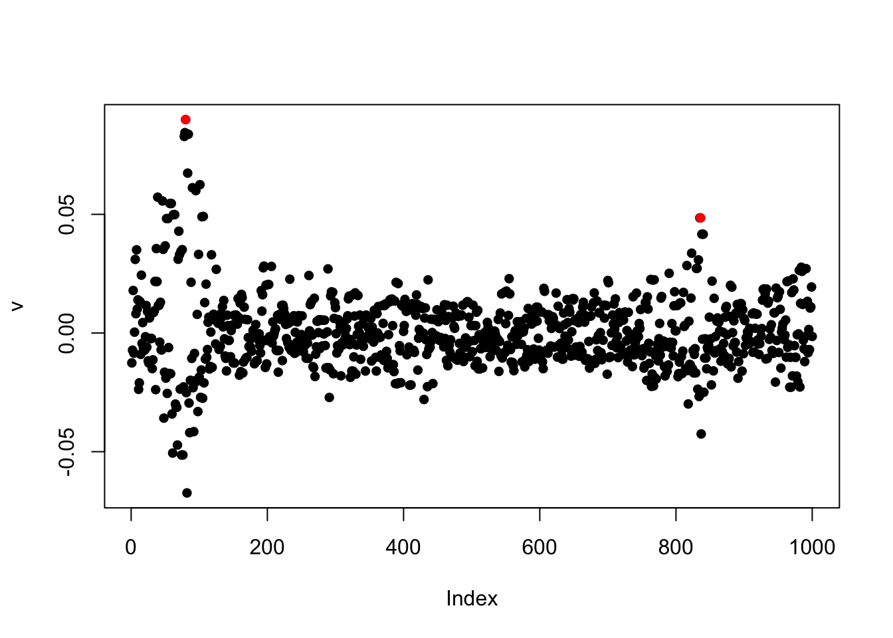
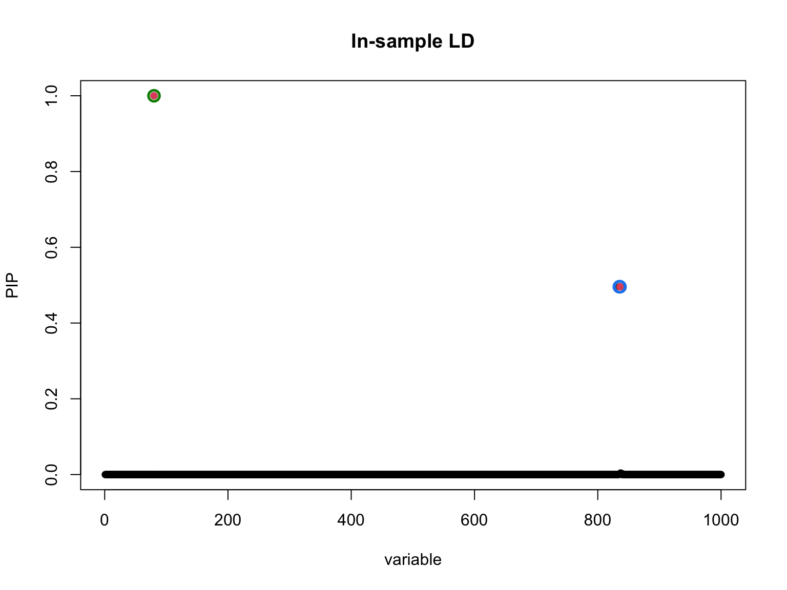
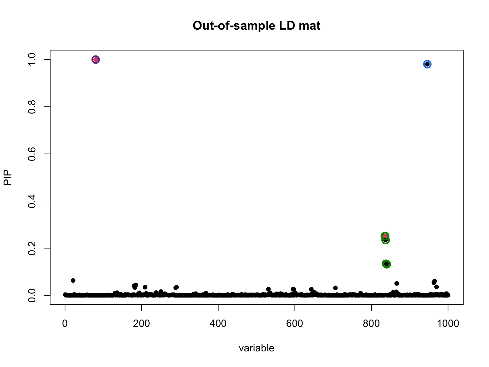
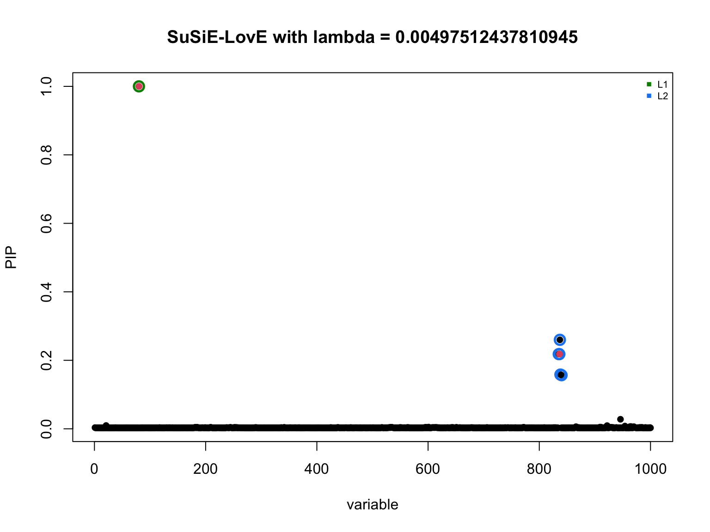
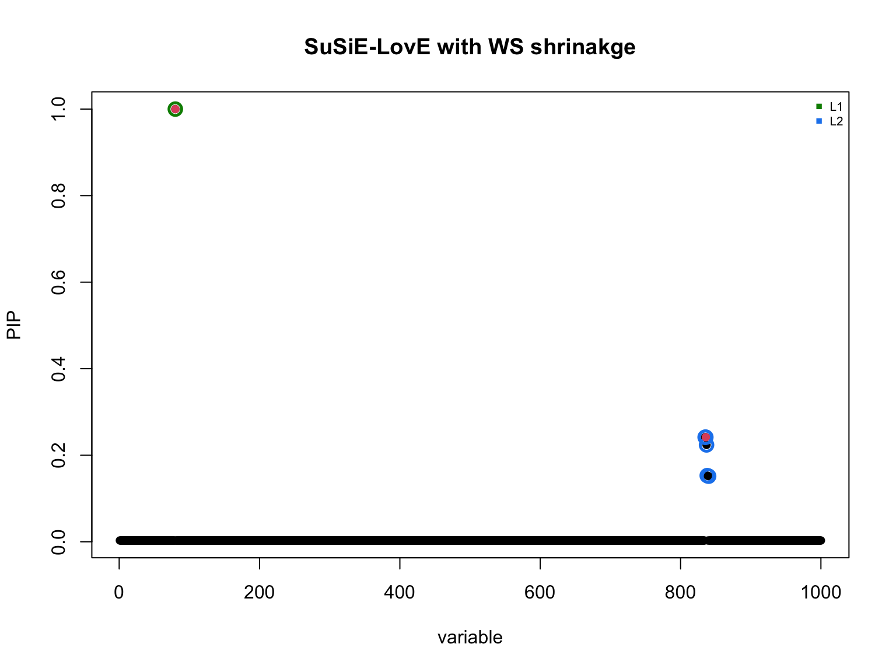
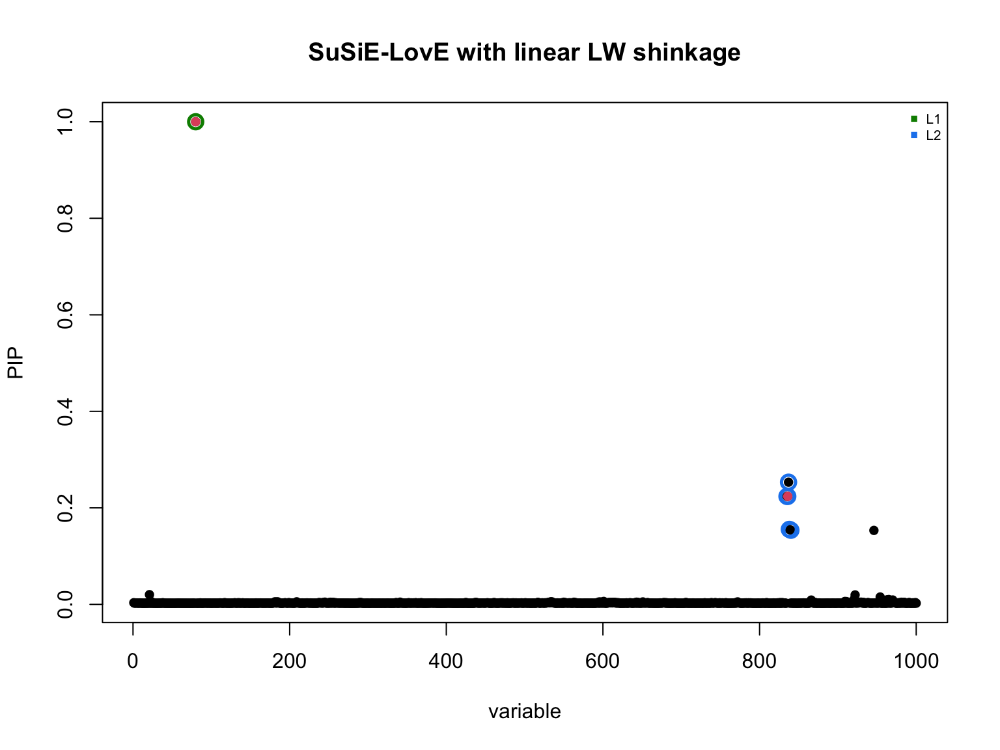
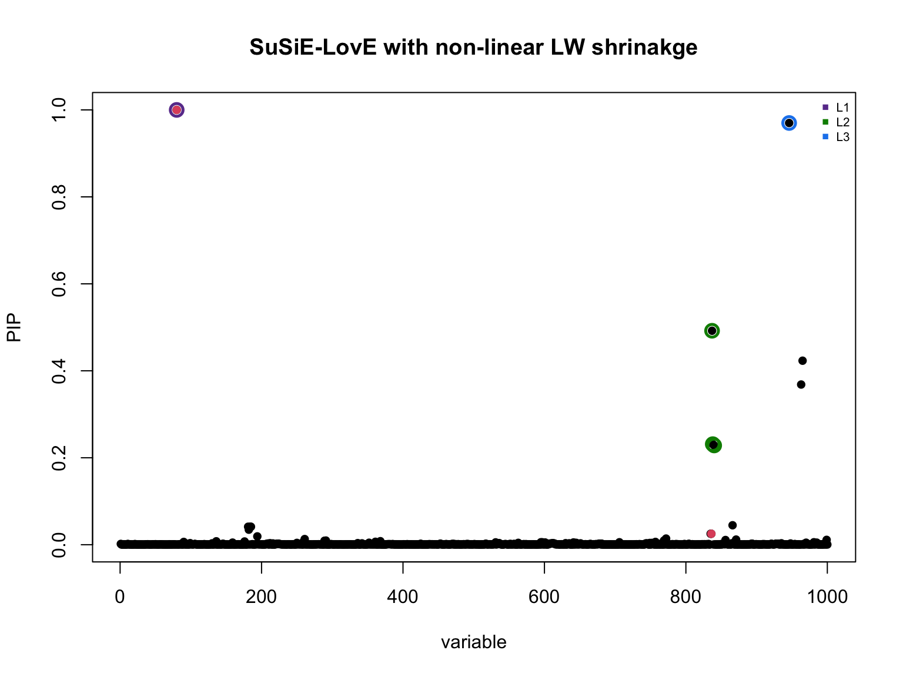
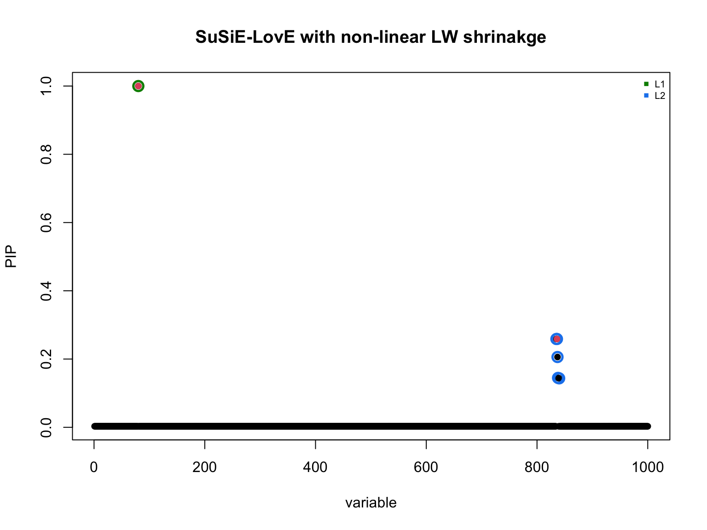

Last updated: 2026-06-05
Checks: 7 0
Knit directory: susie_love_experiments/
This reproducible R Markdown analysis was created with workflowr (version 1.7.2). The Checks tab describes the reproducibility checks that were applied when the results were created. The Past versions tab lists the development history.
Great! Since the R Markdown file has been committed to the Git repository, you know the exact version of the code that produced these results.
Great job! The global environment was empty. Objects defined in the global environment can affect the analysis in your R Markdown file in unknown ways. For reproduciblity it’s best to always run the code in an empty environment.
The command set.seed(20260419) was run prior to running
the code in the R Markdown file. Setting a seed ensures that any results
that rely on randomness, e.g. subsampling or permutations, are
reproducible.
Great job! Recording the operating system, R version, and package versions is critical for reproducibility.
Nice! There were no cached chunks for this analysis, so you can be confident that you successfully produced the results during this run.
Great job! Using relative paths to the files within your workflowr project makes it easier to run your code on other machines.
Great! You are using Git for version control. Tracking code development and connecting the code version to the results is critical for reproducibility.
The results in this page were generated with repository version a85302a. See the Past versions tab to see a history of the changes made to the R Markdown and HTML files.
Note that you need to be careful to ensure that all relevant files for
the analysis have been committed to Git prior to generating the results
(you can use wflow_publish or
wflow_git_commit). workflowr only checks the R Markdown
file, but you know if there are other scripts or data files that it
depends on. Below is the status of the Git repository when the results
were generated:
Ignored files:
Ignored: .DS_Store
Ignored: .Rhistory
Ignored: .Rproj.user/
Untracked files:
Untracked: analysis/high-mismatch-tiny-nu0.Rmd
Untracked: analysis/test.Rmd
Unstaged changes:
Modified: analysis/divergence_increase-nu_decrease.Rmd
Note that any generated files, e.g. HTML, png, CSS, etc., are not included in this status report because it is ok for generated content to have uncommitted changes.
These are the previous versions of the repository in which changes were
made to the R Markdown (analysis/various-shrinkage.Rmd) and
HTML (docs/various-shrinkage.html) files. If you’ve
configured a remote Git repository (see ?wflow_git_remote),
click on the hyperlinks in the table below to view the files as they
were in that past version.
| File | Version | Author | Date | Message |
|---|---|---|---|---|
| Rmd | a85302a | dodat-stats | 2026-06-05 | update latex |
| html | 4deaf8e | dodat-stats | 2026-06-01 | Build site. |
| Rmd | b894cfc | dodat-stats | 2026-06-01 | Add various shrinkage analysis |
Let’s suppose that we want to go with the
susie_love_lambda implementation of the method. So that we
assume the prior \[R | \nu_{\delta} \sim
\mathcal{IW}(\nu_{\delta} \Psi_0, \nu_{\delta} + J + 1), \] where
\(\Psi_0\) is somewhat shrinkage
estimate obtained from the out-of-sample \(R_0\). We can think of \(\Psi_0\) as an estimate for the population
out-of-sample covariance matrix. For the uniform presentation, we
consider CORRELATION MATRIX instead of covariance here (so that the
diagonal is constrained to be 1). Consider the following strategies:
Naive shrinkage: \[\Psi_{naive} = \left(1-\dfrac{1}{N_0}) R_0\right) + \dfrac{1}{N_0} I\]
Wen and Stephens (2010) shrinkage: \[\Psi_{WS} = \left(1- \lambda\right)^2 R_0 + (1 - (1-\lambda)^2) I,\] where \(\lambda = \dfrac{\theta}{\theta + 2 N_0}\) and \(\theta\) is the Watterson’s estimator $= (_{i=1}^{2N_0 - 1} )^{-1} ((2N_0) + 0.57)^{-1} $.
Ledoit and Wolf (2004) linear shrinkage: \[\Psi_{linear-LW} = \left(1- \lambda\right) R_0 + \lambda I,\] where \(\lambda\) is estimated by minimizing the MSE between \(\Psi\) and the true unknown \(\Psi\) (similar approach to James-Stein shrinkage). The result \(\lambda \asymp \dfrac{1}{N_0}\).
Ledoit and Wolf (2020) non-linear shrinkage: \(\Psi_{nonlinear-LW}\) is obtained from non-linear shrinkage of the sample eigenvalues. See their AoS 2020 paper, which use the random matrix theory to derive the shrinakge rule. This is considered state-of-the-art method for shrinkage in their review paper later.
Both 3 and 4 are implemented in the package
cvCovEst.
compute_wen_stephens <- function(R_0, N_ref) {
# Number of haplotypes (diploid population)
d <- 2 * N_ref
# Calculate Watterson's estimator constant (Harmonic sum)
harmonic_sum <- sum(1 / (1:(d - 1)))
theta <- 1 / harmonic_sum
# Calculate the exact mutation shrinkage parameter lambda
lambda <- theta / (theta + 2 * N_ref)
# Apply local uniform shrinkage: Psi = (1-lambda)^2 * R_0 + (1 - (1-lambda)^2) * I
p <- ncol(R_0)
R_ws <- (1 - lambda)^2 * R_0 + (1 - (1 - lambda)^2) * diag(p)
return(R_ws)
}
compute_lw_linear_from_R0 <- function(R_0, N_ref) {
p <- ncol(R_0)
# 1. Sum of the squared off-diagonal elements of R_0
# (This is the Frobenius norm of the off-diagonals)
sum_sq_off_diag <- sum(R_0^2) - p
# 2. Estimate the sampling variance (noise) parameter under normality
# In correlation space, the sum of variances of r_ij is approximated by:
beta_sq <- (1 / N_ref) * (p + sum_sq_off_diag)
# 3. Calculate the distance to the identity target matrix
# Since diag(R_0) is all 1s and diag(I) is all 1s, the distance is just
# the sum of the squared off-diagonal elements.
delta_sq <- sum_sq_off_diag
# 4. Compute the optimal shrinkage intensity alpha
# Guard against division by zero if R_0 is already the identity matrix
if (delta_sq == 0) {
alpha <- 1
} else {
alpha <- min(1, beta_sq / delta_sq)
}
# 5. Construct the shrunk matrix: alpha * I + (1 - alpha) * R_0
R_lw_linear <- (1 - alpha) * R_0 + alpha * diag(p)
# Print the learned alpha for transparency
cat("Ledoit-Wolf Linear Alpha estimated from R_0:", alpha, "\n")
return(R_lw_linear)
}
compute_lw_nonlinear_from_R0 <- function(R_0, N_ref) {
p <- ncol(R_0)
# 1. Spectral Decomposition of the correlation matrix
decomp <- eigen(R_0, symmetric = TRUE)
lambda <- decomp$values # Sample eigenvalues
U <- decomp$vectors # Sample eigenvectors
# Enforce non-negativity (numerical cleanup for trailing eigenvalues)
lambda <- pmax(lambda, 0)
# 2. Setup the non-linear shrinkage parameters (Random Matrix Theory)
gamma <- p / N_ref
# Compute the complex grid parameters safely
h <- N_ref^(-1/3)
z <- lambda + 1i * h # z is a vector of length p
# 3. Calculate the Stieltjes transform (m)
# Instead of duplicating matrices, we use outer subtraction:
# column j evaluates 1 / (z_j - lambda_i)
# rowMeans then averages across all i for each j.
m <- rowMeans(1 / (outer(z, lambda, "-")))
# 4. Calculate the optimal non-linear shrinkage function (d_j)
d <- lambda / ((1 - gamma - gamma * lambda * Re(m))^2 + (gamma * lambda * Im(m))^2)
# Floor the cleaned eigenvalues to guarantee strict positive-definiteness
d <- pmax(d, min(lambda[lambda > 0]))
# 5. Reconstruct the regularized matrix using the cleaned eigenvalues
R_lw_nonlinear_raw <- U %*% (d * t(U))
# 6. Standardize back to a perfect correlation space (diagonals = 1)
R_lw_nonlinear <- cov2cor(R_lw_nonlinear_raw)
return(R_lw_nonlinear)
}
First we use sim_2pop() to simulate two populations that
diverged 25 generations ago. POP1 is a large GWAS cohort (N = 25,000)
and POP2 is a small LD reference panel (N₀ = 200).
library(susielove)
seed <- 1
T_split <- 25
chrom <- "chr22"
start <- 20e6
end <- 21e6
N <- 25000L
N0 <- 200L
J <- 1000L
h2 <- 0.01
res <- sim_2pop(chrom, start, end,
T_split = T_split,
n_gwas = N,
n_ref = N0,
J = J,
h2 = h2,
seed = seed)
v <- res$v
R <- res$R
R0 <- res$R0
beta_true <- res$beta_true
causal_SNPs_loc <- res$causal_SNPs_loc
Here are marginal associations:
## standardized
d = 1 / sqrt(diag(R))
v = d * v
R = cov2cor(R)
R0 = cov2cor(R0)
plot(v, pch = 16)
points(causal_SNPs_loc, v[causal_SNPs_loc], pch = 16, col = "red")
| Version | Author | Date |
|---|---|---|
| 4deaf8e | dodat-stats | 2026-06-01 |
When the true in-sample LD is available, standard SuSiE works perfectly:
library(susieR)
fit <- susie_suff_stat(
XtX = N * R,
Xty = N * v,
n = N,
yty = N
)
susie_plot(fit, y = "PIP", b = beta_true, main = "In-sample LD")
| Version | Author | Date |
|---|---|---|
| 4deaf8e | dodat-stats | 2026-06-01 |
Using the mismatched LD reference directly leads to spurious signals:
fit_R0 <- susie_suff_stat(
XtX = N * R0,
Xty = N * v,
n = N,
yty = N,
L = 5
)
susie_plot(fit_R0, y = "PIP", b = beta_true, main = "Out-of-sample LD mat")
| Version | Author | Date |
|---|---|---|
| 4deaf8e | dodat-stats | 2026-06-01 |
susie_love_lambda jointly learns the covariance matrix
while performing fine-mapping. Here \(\lambda\) is set to \(1 / (N_0 + 1) \approx 1 / 200 = 0.005\)
lambda <- 1 / (N0 + 1)
diag_R <- diag(R)
R_out <- R0
k <- min(N0, J)
love_res <- susie_love_lambda(v, R_out, diag_R,
lambda,
N, L = 5,
k,
nu_delta_init = 1000,
step_susie = 20,
step_R = 30,
step_nu = 10,
max_iter = 30,
tol = 1e-4)
#> Iter 1 | Loss: -2.2796 | nu_q: 858.6 | nu_delta: 856.7
#> Iter 2 | Loss: -2.3142 | nu_q: 768.8 | nu_delta: 765.6
#> Iter 3 | Loss: -2.3263 | nu_q: 716.4 | nu_delta: 712.2
#> Iter 4 | Loss: -2.3305 | nu_q: 686.7 | nu_delta: 682.0
#> Iter 5 | Loss: -2.3319 | nu_q: 671.0 | nu_delta: 665.9
#> Iter 6 | Loss: -2.3323 | nu_q: 662.8 | nu_delta: 657.7
#> Iter 7 | Loss: -2.3325 | nu_q: 657.5 | nu_delta: 652.2
#> Iter 8 | Loss: -2.3326 | nu_q: 657.5 | nu_delta: 652.2
#> Converged at iteration 8
b_res <- love_res$b_res
R_q <- love_res$R_q
susie_plot_alpha(
alpha = b_res$alpha,
R = cov2cor(R_q),
b = beta_true,
main = paste0("SuSiE-LovE with lambda = ", lambda)
)
| Version | Author | Date |
|---|---|---|
| 4deaf8e | dodat-stats | 2026-06-01 |
The result looks good. The spurious CS is gone.
Here (and other 2 methods) I directly obtain the estimated shrinkage \(\Psi\) and set \(\lambda\) in the algorithm to 0.
diag_R <- diag(R)
R_out <- compute_wen_stephens(R_0 = R0, N_ref = N0)
k <- min(N0, J)
love_res_WS <- susie_love_lambda(v, R_out, diag_R,
lambda = 0,
N, L = 5,
k,
nu_delta_init = 1000,
step_susie = 20,
step_R = 30,
step_nu = 10,
max_iter = 30,
tol = 1e-4)
#> Iter 1 | Loss: 6.0609 | nu_q: 284.7 | nu_delta: 285.5
#> Iter 2 | Loss: 3.3304 | nu_q: 198.4 | nu_delta: 198.1
#> Iter 3 | Loss: 2.1248 | nu_q: 198.7 | nu_delta: 198.8
#> Iter 4 | Loss: 0.2873 | nu_q: 251.2 | nu_delta: 249.4
#> Iter 5 | Loss: -1.6246 | nu_q: 313.8 | nu_delta: 311.7
#> Iter 6 | Loss: -1.7286 | nu_q: 337.0 | nu_delta: 334.5
#> Iter 7 | Loss: -1.7478 | nu_q: 355.1 | nu_delta: 351.9
#> Iter 8 | Loss: -1.7536 | nu_q: 357.2 | nu_delta: 353.8
#> Iter 9 | Loss: -1.7564 | nu_q: 361.7 | nu_delta: 358.0
#> Iter 10 | Loss: -1.7579 | nu_q: 363.3 | nu_delta: 359.3
#> Iter 11 | Loss: -1.7588 | nu_q: 364.9 | nu_delta: 360.7
#> Iter 12 | Loss: -1.7593 | nu_q: 365.5 | nu_delta: 361.2
#> Iter 13 | Loss: -1.7594 | nu_q: 365.5 | nu_delta: 361.2
#> Converged at iteration 13
b_res <- love_res_WS$b_res
R_q <- love_res_WS$R_q
susie_plot_alpha(
alpha = b_res$alpha,
R = cov2cor(R_q),
b = beta_true,
main = paste0("SuSiE-LovE with WS shrinakge")
)
| Version | Author | Date |
|---|---|---|
| 4deaf8e | dodat-stats | 2026-06-01 |
diag_R <- diag(R)
R_out <- compute_lw_linear_from_R0(R0, N0)
#> Ledoit-Wolf Linear Alpha estimated from R_0: 0.005219331
k <- min(N0, J)
love_res_LW_linear <- susie_love_lambda(v, R_out, diag_R,
lambda = 0,
N, L = 5,
k,
nu_delta_init = 1000,
step_susie = 20,
step_R = 30,
step_nu = 10,
max_iter = 30,
tol = 1e-4)
#> Iter 1 | Loss: -2.3068 | nu_q: 851.3 | nu_delta: 849.4
#> Iter 2 | Loss: -2.3352 | nu_q: 772.6 | nu_delta: 769.1
#> Iter 3 | Loss: -2.3438 | nu_q: 727.4 | nu_delta: 723.2
#> Iter 4 | Loss: -2.3472 | nu_q: 701.2 | nu_delta: 696.4
#> Iter 5 | Loss: -2.3484 | nu_q: 686.4 | nu_delta: 681.3
#> Iter 6 | Loss: -2.3487 | nu_q: 678.6 | nu_delta: 673.5
#> Iter 7 | Loss: -2.3488 | nu_q: 678.6 | nu_delta: 673.5
#> Converged at iteration 7
b_res <- love_res_LW_linear$b_res
R_q <- love_res_LW_linear$R_q
susie_plot_alpha(
alpha = b_res$alpha,
R = cov2cor(R_q),
b = beta_true,
main = paste0("SuSiE-LovE with linear LW shinkage")
)
| Version | Author | Date |
|---|---|---|
| 4deaf8e | dodat-stats | 2026-06-01 |
diag_R <- diag(R)
R_out <- compute_lw_nonlinear_from_R0(R0, N0)
k <- min(N0, J)
love_res_LW_nonlinear <- susie_love_lambda(v, R_out, diag_R,
lambda = 0,
N, L = 5,
k,
nu_delta_init = 1000,
step_susie = 20,
step_R = 30,
step_nu = 10,
max_iter = 30,
tol = 1e-4)
#> Iter 1 | Loss: 7809.5294 | nu_q: 112.5 | nu_delta: 31.2
#> Iter 2 | Loss: 7169.8266 | nu_q: 10.3 | nu_delta: 7.6
#> Iter 3 | Loss: 7077.0744 | nu_q: 8.2 | nu_delta: 7.1
#> Iter 4 | Loss: 6965.5885 | nu_q: 7.4 | nu_delta: 8.2
#> Iter 5 | Loss: 6906.8296 | nu_q: 6.9 | nu_delta: 8.7
#> Iter 6 | Loss: 6877.3066 | nu_q: 6.7 | nu_delta: 9.0
#> Iter 7 | Loss: 6779.5553 | nu_q: 6.1 | nu_delta: 10.0
#> Iter 8 | Loss: 6723.3052 | nu_q: 5.7 | nu_delta: 10.7
#> Iter 9 | Loss: 6677.8064 | nu_q: 5.5 | nu_delta: 11.3
#> Iter 10 | Loss: 6644.8369 | nu_q: 5.3 | nu_delta: 11.7
#> Iter 11 | Loss: 6516.8028 | nu_q: 4.7 | nu_delta: 13.6
#> Iter 12 | Loss: 6499.7404 | nu_q: 4.6 | nu_delta: 13.8
#> Iter 13 | Loss: 6483.4541 | nu_q: 4.5 | nu_delta: 14.1
#> Iter 14 | Loss: 6474.0386 | nu_q: 4.5 | nu_delta: 14.2
#> Iter 15 | Loss: 6470.6679 | nu_q: 4.4 | nu_delta: 14.3
#> Iter 16 | Loss: 6468.4793 | nu_q: 4.4 | nu_delta: 14.3
#> Iter 17 | Loss: 6466.7235 | nu_q: 4.4 | nu_delta: 14.4
#> Iter 18 | Loss: 6464.3938 | nu_q: 4.4 | nu_delta: 14.4
#> Iter 19 | Loss: 6462.7994 | nu_q: 4.4 | nu_delta: 14.4
#> Iter 20 | Loss: 6461.8233 | nu_q: 4.4 | nu_delta: 14.4
#> Iter 21 | Loss: 6458.4081 | nu_q: 4.4 | nu_delta: 14.5
#> Iter 22 | Loss: 6456.6105 | nu_q: 4.4 | nu_delta: 14.5
#> Iter 23 | Loss: 6455.4247 | nu_q: 4.4 | nu_delta: 14.5
#> Iter 24 | Loss: 6453.5590 | nu_q: 4.4 | nu_delta: 14.6
#> Iter 25 | Loss: 6452.2750 | nu_q: 4.3 | nu_delta: 14.6
#> Iter 26 | Loss: 6451.4502 | nu_q: 4.3 | nu_delta: 14.6
#> Iter 27 | Loss: 6449.1110 | nu_q: 4.3 | nu_delta: 14.6
#> Iter 28 | Loss: 6446.5861 | nu_q: 4.3 | nu_delta: 14.7
#> Iter 29 | Loss: 6445.6206 | nu_q: 4.3 | nu_delta: 14.7
#> Iter 30 | Loss: 6445.0261 | nu_q: 4.3 | nu_delta: 14.7
b_res <- love_res_LW_nonlinear$b_res
R_q <- love_res_LW_nonlinear$R_q
susie_plot_alpha(
alpha = b_res$alpha,
R = cov2cor(R_q),
b = beta_true,
main = paste0("SuSiE-LovE with non-linear LW shrinakge")
)
| Version | Author | Date |
|---|---|---|
| 4deaf8e | dodat-stats | 2026-06-01 |
It is a bit problematic for this shrinkage since many eigenvalues are
still close to 0. Our theory for conservative behavior requires the
eigenvalues of \(\Psi\) to be bounded
away from 0 to work (Lower bound of the L_cov in the \(L > 2\) case; I can show exactly where
it is needed when we meet).
eigen(R_out)$values
#> [1] 6.099222e+01 5.072883e+01 4.335260e+01 3.988332e+01 3.541917e+01
#> [6] 3.431440e+01 3.280778e+01 2.914762e+01 2.819255e+01 2.537860e+01
#> [11] 2.355303e+01 2.145727e+01 2.140795e+01 1.994015e+01 1.987108e+01
#> [16] 1.821303e+01 1.724394e+01 1.708409e+01 1.617383e+01 1.508897e+01
#> [21] 1.433934e+01 1.348919e+01 1.276087e+01 1.238335e+01 1.159545e+01
#> [26] 1.139725e+01 1.130050e+01 1.036909e+01 1.016722e+01 9.991587e+00
#> [31] 9.625047e+00 9.578259e+00 9.336236e+00 8.570943e+00 8.554281e+00
#> [36] 7.942999e+00 7.732914e+00 7.238357e+00 7.204095e+00 7.164851e+00
#> [41] 6.721239e+00 6.695368e+00 6.495174e+00 6.155394e+00 5.727639e+00
#> [46] 5.684262e+00 5.461409e+00 5.349094e+00 5.322394e+00 5.206960e+00
#> [51] 5.020512e+00 4.862510e+00 4.474973e+00 4.333658e+00 4.329299e+00
#> [56] 4.320603e+00 3.854939e+00 3.792575e+00 3.582351e+00 3.471008e+00
#> [61] 3.400726e+00 3.256244e+00 3.219277e+00 3.154839e+00 3.121762e+00
#> [66] 3.053035e+00 2.931970e+00 2.900052e+00 2.652478e+00 2.586525e+00
#> [71] 2.569883e+00 2.480418e+00 2.368278e+00 2.344297e+00 2.298092e+00
#> [76] 2.271536e+00 2.203708e+00 2.164183e+00 2.140122e+00 2.053839e+00
#> [81] 2.043545e+00 1.919105e+00 1.823415e+00 1.753742e+00 1.730027e+00
#> [86] 1.683245e+00 1.625843e+00 1.563998e+00 1.532599e+00 1.496775e+00
#> [91] 1.421436e+00 1.413019e+00 1.342770e+00 1.319775e+00 1.262649e+00
#> [96] 1.249383e+00 1.220500e+00 1.184228e+00 1.142733e+00 1.100858e+00
#> [101] 1.086640e+00 1.055023e+00 1.016987e+00 9.997805e-01 9.670746e-01
#> [106] 9.295779e-01 9.040491e-01 8.968161e-01 8.740103e-01 8.612115e-01
#> [111] 8.402996e-01 8.240388e-01 7.978653e-01 7.877377e-01 7.821620e-01
#> [116] 7.626391e-01 7.585325e-01 7.432770e-01 7.340520e-01 7.059607e-01
#> [121] 6.920712e-01 6.795632e-01 6.570953e-01 6.366414e-01 6.286490e-01
#> [126] 6.010120e-01 5.914979e-01 5.850198e-01 5.718296e-01 5.685984e-01
#> [131] 5.636327e-01 5.338578e-01 5.215703e-01 5.150504e-01 5.095751e-01
#> [136] 5.028104e-01 4.884149e-01 4.840872e-01 4.789957e-01 4.692185e-01
#> [141] 4.592170e-01 4.511684e-01 4.304112e-01 4.256891e-01 4.188524e-01
#> [146] 4.168302e-01 3.989140e-01 3.925031e-01 3.889538e-01 3.815914e-01
#> [151] 3.770855e-01 3.712501e-01 3.676577e-01 3.593159e-01 3.569518e-01
#> [156] 3.497389e-01 3.442797e-01 3.420056e-01 3.371775e-01 3.293086e-01
#> [161] 3.273007e-01 3.239467e-01 3.186124e-01 3.133032e-01 3.115866e-01
#> [166] 3.066320e-01 3.039883e-01 3.006060e-01 2.976675e-01 2.936244e-01
#> [171] 2.904723e-01 2.891153e-01 2.829661e-01 2.815419e-01 2.771373e-01
#> [176] 2.744726e-01 2.667200e-01 2.626777e-01 2.596417e-01 2.550405e-01
#> [181] 2.474276e-01 2.382312e-01 2.351362e-01 2.227907e-01 2.176743e-01
#> [186] 2.033707e-01 1.937961e-01 1.794292e-01 1.685731e-01 1.595818e-01
#> [191] 1.544373e-01 1.482880e-01 1.415129e-01 1.211902e-01 1.060529e-01
#> [196] 8.825106e-02 8.391640e-02 4.936636e-02 4.357165e-02 7.027625e-14
#> [201] 1.103622e-14 6.444805e-15 4.252723e-15 3.903166e-15 3.718482e-15
#> [206] 3.411343e-15 3.230465e-15 3.041889e-15 2.922154e-15 2.396436e-15
#> [211] 2.262929e-15 2.259173e-15 2.070377e-15 1.849838e-15 1.739013e-15
#> [216] 1.730130e-15 1.601649e-15 1.574777e-15 1.533151e-15 1.310288e-15
#> [221] 1.305722e-15 1.298667e-15 1.185127e-15 1.133479e-15 1.113507e-15
#> [226] 1.112610e-15 1.100793e-15 1.100722e-15 1.098127e-15 1.096709e-15
#> [231] 1.081073e-15 1.078286e-15 1.072101e-15 1.063667e-15 1.062563e-15
#> [236] 9.831126e-16 9.723816e-16 9.583375e-16 9.578875e-16 9.470803e-16
#> [241] 9.421364e-16 9.415036e-16 9.398554e-16 9.365331e-16 9.226818e-16
#> [246] 8.876024e-16 8.781935e-16 8.697243e-16 8.647252e-16 8.636000e-16
#> [251] 8.565798e-16 8.494283e-16 8.448522e-16 8.442647e-16 8.440452e-16
#> [256] 8.429184e-16 8.338971e-16 8.249790e-16 8.163810e-16 7.713056e-16
#> [261] 7.677379e-16 7.638457e-16 7.457827e-16 7.364806e-16 7.329722e-16
#> [266] 7.270269e-16 7.254021e-16 7.209672e-16 7.208636e-16 7.125768e-16
#> [271] 6.967182e-16 6.819637e-16 6.796601e-16 6.758711e-16 6.687590e-16
#> [276] 6.560118e-16 6.560060e-16 6.530931e-16 6.441014e-16 6.398661e-16
#> [281] 6.321945e-16 6.289620e-16 6.288456e-16 6.097106e-16 6.026110e-16
#> [286] 6.020191e-16 5.977126e-16 5.970022e-16 5.777821e-16 5.690907e-16
#> [291] 5.687979e-16 5.575978e-16 5.544280e-16 5.434600e-16 5.414182e-16
#> [296] 5.393422e-16 5.388237e-16 5.361229e-16 5.358552e-16 5.358335e-16
#> [301] 5.279600e-16 5.249951e-16 5.238796e-16 5.150798e-16 5.142933e-16
#> [306] 5.081239e-16 5.074513e-16 5.056048e-16 5.053458e-16 5.003811e-16
#> [311] 4.960147e-16 4.861715e-16 4.849591e-16 4.842336e-16 4.838744e-16
#> [316] 4.815934e-16 4.783441e-16 4.721964e-16 4.690251e-16 4.656109e-16
#> [321] 4.651368e-16 4.629474e-16 4.579084e-16 4.568327e-16 4.529901e-16
#> [326] 4.455481e-16 4.452625e-16 4.437964e-16 4.427095e-16 4.343658e-16
#> [331] 4.181325e-16 4.171320e-16 4.155127e-16 4.133080e-16 4.129624e-16
#> [336] 4.091298e-16 4.074229e-16 4.041292e-16 3.982761e-16 3.963823e-16
#> [341] 3.946749e-16 3.929473e-16 3.914709e-16 3.874355e-16 3.817301e-16
#> [346] 3.815338e-16 3.815317e-16 3.746940e-16 3.705136e-16 3.562593e-16
#> [351] 3.557241e-16 3.511241e-16 3.500024e-16 3.485240e-16 3.473595e-16
#> [356] 3.429656e-16 3.381079e-16 3.356661e-16 3.311601e-16 3.303395e-16
#> [361] 3.291737e-16 3.285607e-16 3.284573e-16 3.275584e-16 3.252712e-16
#> [366] 3.222526e-16 3.207393e-16 3.203693e-16 3.193898e-16 3.175001e-16
#> [371] 3.078008e-16 3.055496e-16 3.053882e-16 3.049173e-16 3.046242e-16
#> [376] 3.026612e-16 2.988569e-16 2.949890e-16 2.946563e-16 2.844681e-16
#> [381] 2.832328e-16 2.819748e-16 2.785036e-16 2.773593e-16 2.725631e-16
#> [386] 2.721407e-16 2.709688e-16 2.693046e-16 2.685217e-16 2.682668e-16
#> [391] 2.678701e-16 2.675104e-16 2.670251e-16 2.665049e-16 2.659832e-16
#> [396] 2.657850e-16 2.657069e-16 2.652631e-16 2.625991e-16 2.613004e-16
#> [401] 2.579492e-16 2.549986e-16 2.510922e-16 2.481046e-16 2.477968e-16
#> [406] 2.464285e-16 2.464154e-16 2.448851e-16 2.442329e-16 2.435846e-16
#> [411] 2.426188e-16 2.417750e-16 2.406828e-16 2.382891e-16 2.380665e-16
#> [416] 2.362227e-16 2.359169e-16 2.341578e-16 2.299433e-16 2.288774e-16
#> [421] 2.287320e-16 2.284107e-16 2.280130e-16 2.266492e-16 2.258530e-16
#> [426] 2.250491e-16 2.208276e-16 2.200685e-16 2.183833e-16 2.168578e-16
#> [431] 2.165906e-16 2.140870e-16 2.124596e-16 2.105581e-16 2.086933e-16
#> [436] 2.083736e-16 2.022655e-16 2.009828e-16 1.961475e-16 1.943126e-16
#> [441] 1.937797e-16 1.928697e-16 1.916423e-16 1.907596e-16 1.904509e-16
#> [446] 1.853428e-16 1.784124e-16 1.778646e-16 1.769620e-16 1.733243e-16
#> [451] 1.728688e-16 1.719356e-16 1.690893e-16 1.672393e-16 1.672317e-16
#> [456] 1.671225e-16 1.661188e-16 1.653737e-16 1.651308e-16 1.638426e-16
#> [461] 1.626081e-16 1.612066e-16 1.601506e-16 1.573785e-16 1.570077e-16
#> [466] 1.562346e-16 1.530610e-16 1.526639e-16 1.516984e-16 1.482139e-16
#> [471] 1.453072e-16 1.452241e-16 1.444008e-16 1.439090e-16 1.435333e-16
#> [476] 1.423744e-16 1.392399e-16 1.388987e-16 1.387625e-16 1.382779e-16
#> [481] 1.382223e-16 1.366283e-16 1.357152e-16 1.332532e-16 1.324079e-16
#> [486] 1.284733e-16 1.279129e-16 1.278620e-16 1.269771e-16 1.265642e-16
#> [491] 1.258955e-16 1.245463e-16 1.244494e-16 1.223355e-16 1.213153e-16
#> [496] 1.209429e-16 1.203036e-16 1.197191e-16 1.193795e-16 1.193441e-16
#> [501] 1.191046e-16 1.181864e-16 1.180112e-16 1.177297e-16 1.177294e-16
#> [506] 1.172916e-16 1.169855e-16 1.166859e-16 1.164699e-16 1.160902e-16
#> [511] 1.159472e-16 1.157238e-16 1.125259e-16 1.122116e-16 1.099077e-16
#> [516] 1.093908e-16 1.087121e-16 1.081054e-16 1.071091e-16 1.067955e-16
#> [521] 1.060823e-16 1.048641e-16 1.047841e-16 1.040435e-16 1.019736e-16
#> [526] 9.909552e-17 9.901348e-17 9.815201e-17 9.705568e-17 9.653415e-17
#> [531] 9.464776e-17 9.370651e-17 9.231787e-17 9.075026e-17 9.025121e-17
#> [536] 8.944912e-17 8.919287e-17 8.615177e-17 8.419142e-17 8.332534e-17
#> [541] 8.181507e-17 8.029992e-17 7.947498e-17 7.944675e-17 7.879170e-17
#> [546] 7.814309e-17 7.713586e-17 7.711916e-17 7.666042e-17 7.559908e-17
#> [551] 7.558244e-17 7.441456e-17 7.406365e-17 7.388092e-17 7.366758e-17
#> [556] 7.337797e-17 7.089371e-17 7.082644e-17 6.984663e-17 6.789404e-17
#> [561] 6.757126e-17 6.706097e-17 6.586972e-17 6.585512e-17 6.568890e-17
#> [566] 6.501402e-17 6.400924e-17 6.384794e-17 6.350997e-17 6.347433e-17
#> [571] 6.309844e-17 6.233274e-17 6.221746e-17 6.183478e-17 6.135645e-17
#> [576] 6.131764e-17 6.026113e-17 5.989069e-17 5.917135e-17 5.842233e-17
#> [581] 5.793611e-17 5.634330e-17 5.567485e-17 5.456977e-17 5.305758e-17
#> [586] 5.205717e-17 4.993241e-17 4.847340e-17 4.842549e-17 4.807955e-17
#> [591] 4.744158e-17 4.376941e-17 4.109902e-17 4.068078e-17 3.980806e-17
#> [596] 3.894537e-17 3.669777e-17 3.595838e-17 3.546154e-17 3.471807e-17
#> [601] 3.437345e-17 3.404862e-17 3.365587e-17 3.362616e-17 3.326858e-17
#> [606] 3.268932e-17 3.249357e-17 3.245162e-17 3.230095e-17 3.220357e-17
#> [611] 3.181706e-17 3.059261e-17 3.057510e-17 3.022431e-17 2.957383e-17
#> [616] 2.934507e-17 2.913352e-17 2.797607e-17 2.742242e-17 2.739046e-17
#> [621] 2.643351e-17 2.524642e-17 2.521869e-17 2.517660e-17 2.414275e-17
#> [626] 2.395830e-17 2.343458e-17 2.202710e-17 2.054040e-17 1.928549e-17
#> [631] 1.894400e-17 1.829318e-17 1.355023e-17 1.346322e-17 1.314719e-17
#> [636] 1.301468e-17 1.254807e-17 1.242284e-17 1.208420e-17 1.145613e-17
#> [641] 1.142831e-17 1.076574e-17 9.179601e-18 9.155506e-18 8.994211e-18
#> [646] 8.411085e-18 7.447591e-18 5.889717e-18 5.005304e-18 4.402207e-18
#> [651] 3.433782e-18 3.381693e-18 3.207256e-18 2.731422e-18 1.181993e-18
#> [656] 7.013718e-19 2.436604e-19 8.124371e-20 -3.382593e-19 -9.302411e-19
#> [661] -1.404979e-18 -2.863019e-18 -4.754790e-18 -5.461704e-18 -6.244962e-18
#> [666] -6.786056e-18 -7.085574e-18 -7.352417e-18 -8.069560e-18 -8.096759e-18
#> [671] -8.564546e-18 -1.064091e-17 -1.178130e-17 -1.315357e-17 -1.344957e-17
#> [676] -1.494147e-17 -1.511405e-17 -1.665199e-17 -1.832908e-17 -1.843624e-17
#> [681] -1.955533e-17 -1.957766e-17 -2.058163e-17 -2.070676e-17 -2.097881e-17
#> [686] -2.100426e-17 -2.101585e-17 -2.278401e-17 -2.283972e-17 -2.409614e-17
#> [691] -2.553025e-17 -2.617190e-17 -2.628573e-17 -2.837983e-17 -3.092515e-17
#> [696] -3.099599e-17 -3.157407e-17 -3.199340e-17 -3.203120e-17 -3.204007e-17
#> [701] -3.252150e-17 -3.313951e-17 -3.389281e-17 -3.427494e-17 -3.449112e-17
#> [706] -3.606685e-17 -3.696832e-17 -3.818636e-17 -3.996082e-17 -4.094690e-17
#> [711] -4.141028e-17 -4.285824e-17 -4.312591e-17 -4.390020e-17 -4.394771e-17
#> [716] -4.452978e-17 -4.647196e-17 -4.665556e-17 -4.724528e-17 -4.748866e-17
#> [721] -4.759781e-17 -4.828997e-17 -5.085185e-17 -5.446275e-17 -5.600438e-17
#> [726] -5.623179e-17 -5.672722e-17 -5.683748e-17 -5.692876e-17 -5.735839e-17
#> [731] -5.761693e-17 -5.793158e-17 -5.935980e-17 -5.991342e-17 -6.002756e-17
#> [736] -6.037073e-17 -6.099042e-17 -6.146754e-17 -6.169868e-17 -6.351131e-17
#> [741] -6.389984e-17 -6.445084e-17 -6.470066e-17 -6.604226e-17 -6.705426e-17
#> [746] -6.722610e-17 -6.750943e-17 -6.862953e-17 -6.890008e-17 -6.894790e-17
#> [751] -6.927295e-17 -6.965576e-17 -6.991434e-17 -7.011052e-17 -7.246497e-17
#> [756] -7.363791e-17 -7.371081e-17 -7.385389e-17 -7.466471e-17 -7.480757e-17
#> [761] -7.534878e-17 -7.635236e-17 -7.715133e-17 -7.872620e-17 -8.054464e-17
#> [766] -8.203072e-17 -8.319701e-17 -8.360843e-17 -8.362699e-17 -8.595082e-17
#> [771] -8.677007e-17 -8.717812e-17 -8.988869e-17 -9.173586e-17 -9.187592e-17
#> [776] -9.234018e-17 -9.261250e-17 -9.264900e-17 -9.353472e-17 -9.390480e-17
#> [781] -9.451332e-17 -9.535039e-17 -9.605097e-17 -9.651782e-17 -9.801028e-17
#> [786] -9.836147e-17 -9.887525e-17 -9.984671e-17 -9.984903e-17 -1.005470e-16
#> [791] -1.007967e-16 -1.018034e-16 -1.039850e-16 -1.055022e-16 -1.060018e-16
#> [796] -1.077251e-16 -1.092619e-16 -1.096339e-16 -1.115637e-16 -1.117972e-16
#> [801] -1.121618e-16 -1.124720e-16 -1.130244e-16 -1.149666e-16 -1.150256e-16
#> [806] -1.156359e-16 -1.160685e-16 -1.162697e-16 -1.167163e-16 -1.168223e-16
#> [811] -1.169990e-16 -1.186659e-16 -1.190790e-16 -1.192485e-16 -1.193120e-16
#> [816] -1.199638e-16 -1.218051e-16 -1.221048e-16 -1.227564e-16 -1.231834e-16
#> [821] -1.240235e-16 -1.241290e-16 -1.243313e-16 -1.247027e-16 -1.249620e-16
#> [826] -1.260464e-16 -1.265597e-16 -1.268120e-16 -1.290222e-16 -1.294224e-16
#> [831] -1.313148e-16 -1.316965e-16 -1.317182e-16 -1.337289e-16 -1.341925e-16
#> [836] -1.351527e-16 -1.355981e-16 -1.362473e-16 -1.363722e-16 -1.401375e-16
#> [841] -1.401971e-16 -1.406405e-16 -1.407907e-16 -1.412416e-16 -1.429855e-16
#> [846] -1.431288e-16 -1.463913e-16 -1.470946e-16 -1.475011e-16 -1.493804e-16
#> [851] -1.502578e-16 -1.505063e-16 -1.514529e-16 -1.530672e-16 -1.534578e-16
#> [856] -1.549549e-16 -1.558631e-16 -1.559263e-16 -1.592231e-16 -1.600058e-16
#> [861] -1.602215e-16 -1.617515e-16 -1.627764e-16 -1.645346e-16 -1.649593e-16
#> [866] -1.664212e-16 -1.665918e-16 -1.669816e-16 -1.675771e-16 -1.681698e-16
#> [871] -1.685853e-16 -1.696438e-16 -1.700333e-16 -1.704083e-16 -1.717023e-16
#> [876] -1.723874e-16 -1.742217e-16 -1.749770e-16 -1.756362e-16 -1.760894e-16
#> [881] -1.770547e-16 -1.777065e-16 -1.780501e-16 -1.782216e-16 -1.788606e-16
#> [886] -1.789939e-16 -1.795286e-16 -1.807722e-16 -1.813934e-16 -1.847882e-16
#> [891] -1.858389e-16 -1.858538e-16 -1.861981e-16 -1.862756e-16 -1.913657e-16
#> [896] -1.914910e-16 -1.918094e-16 -1.934539e-16 -1.949233e-16 -1.967288e-16
#> [901] -2.000095e-16 -2.000489e-16 -2.010609e-16 -2.011299e-16 -2.016260e-16
#> [906] -2.017824e-16 -2.048317e-16 -2.051720e-16 -2.068935e-16 -2.104466e-16
#> [911] -2.113739e-16 -2.127735e-16 -2.129765e-16 -2.167518e-16 -2.177095e-16
#> [916] -2.196933e-16 -2.201861e-16 -2.213466e-16 -2.222964e-16 -2.225601e-16
#> [921] -2.247217e-16 -2.264021e-16 -2.280658e-16 -2.285056e-16 -2.301443e-16
#> [926] -2.301558e-16 -2.302909e-16 -2.326715e-16 -2.327490e-16 -2.371744e-16
#> [931] -2.374336e-16 -2.376380e-16 -2.377267e-16 -2.397011e-16 -2.403576e-16
#> [936] -2.419370e-16 -2.420672e-16 -2.442235e-16 -2.461240e-16 -2.461888e-16
#> [941] -2.467922e-16 -2.516842e-16 -2.517813e-16 -2.518891e-16 -2.588985e-16
#> [946] -2.590424e-16 -2.590755e-16 -2.599426e-16 -2.604188e-16 -2.616325e-16
#> [951] -2.623322e-16 -2.644401e-16 -2.727088e-16 -2.729909e-16 -2.741246e-16
#> [956] -2.779250e-16 -2.781821e-16 -2.789273e-16 -2.810263e-16 -2.837850e-16
#> [961] -2.868759e-16 -2.911870e-16 -2.919056e-16 -2.934106e-16 -2.942446e-16
#> [966] -2.973982e-16 -3.025035e-16 -3.033181e-16 -3.080152e-16 -3.151728e-16
#> [971] -3.157101e-16 -3.157275e-16 -3.178866e-16 -3.236944e-16 -3.239630e-16
#> [976] -3.247782e-16 -3.269784e-16 -3.353212e-16 -3.411808e-16 -3.420942e-16
#> [981] -3.518842e-16 -3.530654e-16 -3.571559e-16 -3.573637e-16 -3.580485e-16
#> [986] -3.738568e-16 -3.800641e-16 -3.810614e-16 -3.812894e-16 -3.814137e-16
#> [991] -3.986197e-16 -4.033818e-16 -4.088287e-16 -4.150137e-16 -4.504612e-16
#> [996] -4.920641e-16 -5.475086e-16 -6.216692e-16 -6.386010e-15 -1.241573e-14Adding a small ridge will help.
diag_R <- diag(R)
R_out <- compute_lw_nonlinear_from_R0(R0, N0)
k <- min(N0, J)
love_res_LW_nonlinear <- susie_love_lambda(v, R_out, diag_R,
lambda = 1e-3,
N, L = 5,
k,
nu_delta_init = 1000,
step_susie = 20,
step_R = 30,
step_nu = 10,
max_iter = 30,
tol = 1e-4)
#> Iter 1 | Loss: 27.7192 | nu_q: 207.7 | nu_delta: 201.9
#> Iter 2 | Loss: 20.5727 | nu_q: 99.5 | nu_delta: 97.5
#> Iter 3 | Loss: 17.9796 | nu_q: 98.1 | nu_delta: 96.1
#> Iter 4 | Loss: 10.3363 | nu_q: 110.0 | nu_delta: 108.1
#> Iter 5 | Loss: 4.6213 | nu_q: 144.9 | nu_delta: 143.1
#> Iter 6 | Loss: 1.8210 | nu_q: 178.6 | nu_delta: 175.7
#> Iter 7 | Loss: 0.9636 | nu_q: 199.0 | nu_delta: 195.7
#> Iter 8 | Loss: 0.3263 | nu_q: 230.6 | nu_delta: 226.3
#> Iter 9 | Loss: -1.0157 | nu_q: 262.4 | nu_delta: 257.2
#> Iter 10 | Loss: -1.7443 | nu_q: 320.3 | nu_delta: 313.8
#> Iter 11 | Loss: -1.7966 | nu_q: 350.2 | nu_delta: 343.2
#> Iter 12 | Loss: -1.8076 | nu_q: 363.2 | nu_delta: 356.3
#> Iter 13 | Loss: -1.8125 | nu_q: 370.9 | nu_delta: 364.1
#> Iter 14 | Loss: -1.8151 | nu_q: 374.7 | nu_delta: 368.1
#> Iter 15 | Loss: -1.8165 | nu_q: 378.3 | nu_delta: 371.8
#> Iter 16 | Loss: -1.8177 | nu_q: 381.0 | nu_delta: 374.8
#> Iter 17 | Loss: -1.8182 | nu_q: 383.1 | nu_delta: 376.9
#> Iter 18 | Loss: -1.8182 | nu_q: 383.1 | nu_delta: 376.9
#> Converged at iteration 18
b_res <- love_res_LW_nonlinear$b_res
R_q <- love_res_LW_nonlinear$R_q
susie_plot_alpha(
alpha = b_res$alpha,
R = cov2cor(R_q),
b = beta_true,
main = paste0("SuSiE-LovE with non-linear LW shrinakge")
)
| Version | Author | Date |
|---|---|---|
| 4deaf8e | dodat-stats | 2026-06-01 |
I think I will go with the naive, WS, and LW linear shrinkage now. So we have automatic choice for \(\lambda\). Learning \(\lambda\) directly from the susie_love model is problematic due to the large dimension \(J\) and that we are considering IW distribution (so it prefers well-condition prior mean and set \(\lambda\) to large). Having automatic choice of \(\lambda\) is great, especially when it is motivated from well-established framework like Wen and Stephens (2010) or Ledoit and Wolf (2004).
sessionInfo()
#> R version 4.5.2 (2025-10-31)
#> Platform: aarch64-apple-darwin20
#> Running under: macOS Tahoe 26.5
#>
#> Matrix products: default
#> BLAS: /System/Library/Frameworks/Accelerate.framework/Versions/A/Frameworks/vecLib.framework/Versions/A/libBLAS.dylib
#> LAPACK: /Library/Frameworks/R.framework/Versions/4.5-arm64/Resources/lib/libRlapack.dylib; LAPACK version 3.12.1
#>
#> locale:
#> [1] en_US.UTF-8/en_US.UTF-8/en_US.UTF-8/C/en_US.UTF-8/en_US.UTF-8
#>
#> time zone: America/New_York
#> tzcode source: internal
#>
#> attached base packages:
#> [1] stats graphics grDevices utils datasets methods base
#>
#> other attached packages:
#> [1] susieR_0.14.2 susielove_0.1.0 workflowr_1.7.2
#>
#> loaded via a namespace (and not attached):
#> [1] generics_0.1.4 sass_0.4.10 stringi_1.8.7 lattice_0.22-7
#> [5] digest_0.6.39 magrittr_2.0.4 evaluate_1.0.5 grid_4.5.2
#> [9] RColorBrewer_1.1-3 fastmap_1.2.0 plyr_1.8.9 rprojroot_2.1.1
#> [13] jsonlite_2.0.0 Matrix_1.7-4 processx_3.8.6 whisker_0.4.1
#> [17] reshape_0.8.10 mixsqp_0.3-54 ps_1.9.1 promises_1.5.0
#> [21] httr_1.4.8 scales_1.4.0 jquerylib_0.1.4 cli_3.6.6
#> [25] rlang_1.2.0 crayon_1.5.3 withr_3.0.2 cachem_1.1.0
#> [29] yaml_2.3.12 otel_0.2.0 tools_4.5.2 dplyr_1.2.0
#> [33] ggplot2_4.0.2 httpuv_1.6.17 reticulate_1.46.0 vctrs_0.7.1
#> [37] R6_2.6.1 png_0.1-9 matrixStats_1.5.0 lifecycle_1.0.5
#> [41] git2r_0.36.2 stringr_1.6.0 fs_2.1.0 irlba_2.3.7
#> [45] pkgconfig_2.0.3 callr_3.7.6 pillar_1.11.1 bslib_0.10.0
#> [49] later_1.4.8 gtable_0.3.6 glue_1.8.0 Rcpp_1.1.1
#> [53] tidyselect_1.2.1 xfun_0.56 tibble_3.3.1 rstudioapi_0.18.0
#> [57] knitr_1.51 farver_2.1.2 htmltools_0.5.9 rmarkdown_2.30
#> [61] compiler_4.5.2 getPass_0.2-4 S7_0.2.1